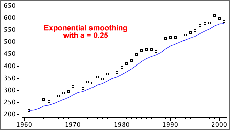

Smoothing up to the end of the series
We are usually most interested in the latest values in a time series, but moving averages cannot provide smoothed values at the two ends of the time series. Exponential smoothing works up to the end of the series:


where the smoothing constant, a, is a value between 0 and 1. The smoothed value is a 'weighted average' of the actual value at that time and the previous smoothed value.
Alternative formula
The formula can also be expressed as

For example, if a = 1/2 ,

The smoothed value puts more weight on the recent past (which is an intuitively sensible thing to do).
Forecasting future values
If the most recent value is at time i, we forecast the value at time i + k to be the last exponentially smoothed value,

Time series with trend
If the time series has an increasing trend, exponential smoothing will tend to underestimate the trend. Similarly, the smoothed series will be too high if there is a decreasing trend.

Do not use exponential smoothing on a time series with trend.